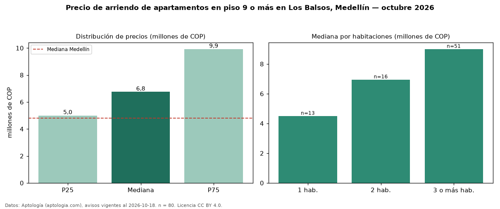

Precio de arriendo de apartamentos en piso 9 o más en Los Balsos, Medellín — octubre 2026
En Los Balsos, Medellín, la mediana de canon mensual de apartamentos en piso 9 o más es COP 6,75 millones, según 80 avisos vigentes. Prácticamente coincide con la mediana de todos los apartamentos en arriendo de Los Balsos (COP 6,65 millones, n = 527); este segmento reúne el 15 % de esos avisos. Por metro cuadrado, la mediana es COP 57.217/m² al mes (n = 80), 5 % por encima del conjunto de referencia (COP 54.737/m²). El área mediana anunciada es 126 m². El segmento con más oferta es el de 3 o más habitaciones (51 avisos, mediana COP 9,00 millones); pasar de 1 habitación a 3 o más habitaciones cambia la mediana +100 %. La mitad central de los avisos va de COP 5,00 millones a COP 9,92 millones (razón 2,0), una dispersión moderada. El estrato más frecuente es 6 (92 % de los avisos con estrato). La mediana de todos los apartamentos en arriendo de Medellín es COP 4,80 millones (+41 % de diferencia). Datos: Aptología (aptologia.com), CC BY 4.0 — https://www.aptologia.com/arriendo/medellin/los-balsos. Archivos: PDF, CSV con las cifras y gráfica PNG.

| Avisos únicos | 80 |
|---|---|
| Percentil 25 | COP 5.000.000 |
| Mediana | COP 6.750.000 |
| Percentil 75 | COP 9.922.500 |
| Mediana por m² | COP 57.217 |
Fuente: avisos vigentes de portales inmobiliarios recopilados por Aptología, deduplicados (mínimo 30 avisos únicos por celda). Precios pedidos, no cerrados. Fecha: 2026-10-18.